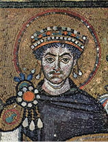

Hıristiyanlığın Kurumsal Yapılanması
Büyük Konstantin, Roma’nın ilk Hıristiyan imparatoruydu ama Hıristiyanlığı kabul eden ilk devlet Roma değil, 301 ila 314 yılları arasında Hıristiyanlığını ilan eden Ermenistan’dı.
330 yılında Hıristiyanlık henüz mezheplere bölünmemişti; teolojik anlamda meşruiyet temsilcileri tarih sırasına göre Antakya, İskenderiye ve (eski) Roma Kiliselerinin ruhban bilginleri ve önderleri de bu kiliselerin patrikleriydi.
Eski Yunancada “baba, aile reisi” anlamına gelen patriarkhes sözcüğünden türetilen makama seçilen patrikler arasında hiyerarşi yoktu. Birinin fetvası, diğerine üstün değildi. 324 yılında Büyük Konstantin’in İznik’te topladığı ilk konsilde kararlaştırılan protokol önceliği her ne kadar Roma, Antakya, İskenderiye diye sıralansa da, bu tümüyle onursal bir hiyerarşiydi. Her üç Kilise ile önderleri, meşru din yönderliğinde henüz eşit önem ve yetki sahibiydiler.
Ne var ki İsa’nın yeryüzündeki varlığına ilişkin son kalıtların, “Kutsal Emanetler”in bağrına gömüldüğü Nova Roma’nın, hem ilk Hıristiyan imparator Büyük Konstantin’in kurduğu emperyal başkent hem de Doğu’dan Batı’ya genişleyen Hıristiyan dünyanın merkezi olarak; meşru Kiliselerin arasına katılması, hatta önderlik iddia etmesi kaçınılmazdı.
Keza Hıristiyanlığın doğduğu toprakları temsil eden Kudüs Kilisesi de bu meşruiyet dışında bırakılamazdı.
Büyük Konstantin’in kutsallığın sadece temsil ögesi olduğu stratejik tercihlerini Batı’dan Doğu’ya kaydırdığını izlemek için hükümranlığının önemli yıldönümlerini nerelerde kutladığına bakmak yeterliydi: Tahta çıkışının yirminci yılını yücelten Vicennalia törenleri, Batı’yı unutmadığını göstermek amacıyla Eski Roma’da yapılmıştı. Yirmi beşinci yılını, bizzat kurduğu Yeni Roma’nın resmî açılışına denk getirmişti. Otuzuncu yıl Tricennalia törenleri için Kudüs’ü seçti. Aradan geçen beş yılda, koyu bir dindar olmuştu. İstanbul’da hem Hıristiyan hem de pagan tapınaklarda kutlanan Gümüş Jübile’sinin aksine, Kudüs’teki tören baştan sona Hıristiyan geleneklerine göre yapıldı.
İki yıl sonra, 22 Mayıs 337’de öldü.
Birleşik Roma tarihinin sonuncu, Hıristiyanlık tarihinin ilk imparatoru Büyük Konstantin, 31 yıllık hükümranlığının son çeyreğinde Yunanca “resullere eşit” anlamına gelen İsapostolos ünvanını kullanıyordu. Bizzat hazırladığı cenaze ve defin mizanseniyle, taşıdığı ünvan hayallerinin ötesinde “Resul” gerçekliği kazandı:
Lal rengi kaftan giydirilen cenazesi, altın bir tabuta yerleştirilip, Büyük Saray’ın tören salonundaki yüksek bir kaidenin üstünde, tam üç ay bekletildi. Çünkü yerine oğullarından hangisinin geçeceği belirsizdi. İmparatorluğun acil işleri ve saray törenleri, bu üç ay boyunca sanki yaşıyormuş gibi O’nun adına yapıldı.
Sonunda, kendisinden sonraki kardeş kavgasında öldürülecek ilk oğlu, Konstantius kaldırdı cenazesini.
Defin töreni, olağanüstü imparatorun tam istediği gibi, olağanüstü bir merasimdi.
Muazzam kafileye savaş giysilerini giyinmiş Roma lejyonlarının başında, oğul Sezar Konstantius öncülük ediyordu. Ardından mızraklı lejyonlar ve ağır piyade birlikleriyle çevrili Büyük Konstantin’in altın tabutu geliyordu...
Büyük Saray’dan çıkan tören kafilesi, Hipodrom’u kuzey doğusundan dolanarak Milion Taşı’na doğru yürüdü. Oradan Mese/Divanyolu’nu izleyerek yapımı tamamlanan Resuller Kilisesi, Havariyyun’a vardı.
Tarihçi Emesalı Eusebios, tarihin en büyük imparatorunun anıtmezarı için şunları yazdı:
“Büyük Konstantin, kabir mekânını resullerle aynı kutsallık katını paylaştığını gösterecek yer ve konumda düşünmüştü. Kiliseye 12 Resul’ün anısına, dinin dayanağı 12 kutsal abide niyetine, 12 lahit yaptırdı. Ortalarına kendi lahtini koydurdu.”11
Hıristiyanlık dogmalarını saptayan ve öğretisine yön veren küresel (ekümenik) din kurultaylarından ilki, önceki sayfalarda yer aldığı gibi, 325 yılında Büyük Konstantin’in başkanlığında yapılan İznik (Nikaia) Konsili’ydi.
İkinci Ekümenik Konsili, Hıristiyan âleminin başkenti Nova Roma’da toplamak, 381 yılında Birleşik Roma’nın sonuncu imparatoru Theodosius’a nasip oldu.
Aradan geçen zamanda başkent, hem Yeni Roma hem de kurucusunu anımsatan Konstantinopolis, (Konstantin’in şehri) diye anılır olmuştu. İlerleyen çağlara popüler adı Konstantinopolis kalacak, “Yeni Roma”lığı ancak tarihine atıf yapıldığında, daha az kullanılacaktı.
381’de İstanbul’da toplanan İkinci Ekümenik Konsil’e katılanların hepsi Doğu Kiliselerinin temsilcileri olup Batı’dan hiçbir ruhban gelmemiş, Roma ve Milano Kiliseleri de yoktu. Hıristiyanlık öğretisindeki dogma ve doktrin çatışmaları iktidar çekişmesine dönüşmüş, hizipçilik başlamıştı.
İznik Konsili’nde saptanan dogmaları ön kabulle başlayan İstanbul Konsili’nde, Konstantinopolis ve Kudüs Kiliseleri Patriklik düzeyine yükseltilerek, Roma, Antakya, İskenderiye’nin yanı sıra teolojik meşruiyet tanındı. Patriklerinin yetkileri de ilk üçünün yetkilerine eşitlendi.
Hıristiyanlığın meşru temsilcilikleri yeni protokol sıralamasında Roma, Konstantinopolis, İskenderiye, Antakya ve Kudüs Kiliseleri diye sayılıyordu. Başka bir deyişle Yeni Roma, diğer kiliselerin tarihsel önceliklerini atlayarak, önem skalasında Kadim Roma’dan hemen sonraki ikinci sıraya oturmuştu. Yeni sıralamayla, Hıristiyanlığı tüm hizip çekişmelerine karşın altı yüzyıl daha aynı çatı altında tutacak “Beşli Hükümet” (pentarşi) yönetimine geçiliyordu.
381’deki Konstantinopolis Ekümenik Konsili’nin saptadığı dogma hükmündeki yedi kutsal kuraldan üçüncüsü şöyleydi:
“Konstantinopolis Patriği, Roma Patriği’nden sonra ikincidir. Bununla birlikte Roma Patriği’nden sonra gelen Konstantinopolis Patriği’nin onursal önceliği vardır; çünkü temsil ettiği kent, Yeni Roma’dır.”
Konstantinopolis Patriği’ne verilen işte bu “onursal öncelik”, Hıristiyanlığın birincil makamı iddiasını taşıyan Eski Roma Patrikliğinin elbette tepesini attırdı. Ama yapabileceği bir şey yoktu.
Çünkü hepsinin üstündeki otorite, Hıristiyan âleminin bir numaralı gerçek egemeni, Tanrı’nın yeryüzündeki elçisi, Pontifex Maximus liderlik ünvanıyla anılan Roma imparatoruydu.
Hıristiyanlık öğretisinin meşru dayanağı “Beşli Hükümet”i oluşturan ve yeryüzünde İsa’nın temsilcisi sayılan beş patrikten biri, kurallara aykırı davrandığı, günaha girdiği ya da suç işlediğinde, kendisini yargılayabilecek tek mercii Pontifex Maximus İmparator’du. Onun da payitahtı, artık Konstantinopolis’ti.
Başka bir deyişle Hıristiyanlığın güç merkezi, ister istemez İstanbul olmuştu.
Roma İmparatorluğu, Theodosius’un 395 yılında ölümüyle iki oğlu arasında ikiye bölündü. Batı’nın imparatoru Honorius, İtalya’da Ravenna’yı başkent yaptı. Arcadius ise, Doğu İmparatoru olarak Konstantinopolis tahtına oturdu.
Ne var ki Batı Roma İmparatorluğu, sonuncu imparatoru Flavius Romulus Augustus’un Germenlere esir düşüp sadece 10 ay kalabildiği tahttan feragat etmesiyle çöktü.
Doğu İmparatoru Zenon, Roma emperyal otoritesinin yegâne meşru vârisi oldu.
Küçük Asya’nın zengin kaynaklarıyla istikrarını koruyabilen Doğu Roma, çöken Batı’nın önce Afrika’da sahipsiz kalan bazı topraklarını kendi sınırlarına kattı.
451 yılında toplanan Khalkedon (Kadıköy) Konsili, Konstantinopolis Fener Patrikliğinin daha “Beşli Hükümet” kiliseleri arasında katılmadan kullanmaya başladığı ekümenik ünvanını resmen tanıdı.
Yeni Roma tahtında 527 yılından 565’e kadar hüküm süren İmparator Birinci Justinianus, Avrupa’yı fethe çıkarak, İtalya başta olmak üzere Batı Roma’nın yitirdiği pek çok eyaleti kuzeyli istilacılardan geri aldı. Doğu ile Batı’sı yeniden birleşen Roma
Batı Roma’yı yıkan Odovakar ve Theoderich
(5. yüzyıl, Nürnberg)
İmparatorluğu neredeyse eski sınırlarına kavuştuktan sonra, tüm Akdeniz havzası Greko Romen sanat ve kültürünün etkisi altına girdi. Konstantinopolis, dünya başkenti olarak en parlak dönemini yaşadı. Justinianus, hukuk ve devlet yönetiminde yaptığı reformlarla, Antik Roma’nın sonuncu büyük imparatoru olarak tarihe geçti.
Ne var ki vârisleri, Justinianus’un yeniden kurduğu bütünlüğü ve egemenliği sürdüremediler.
8. yüzyıla gelindiğinde, Avrupa’da “İsa’yı çarmıha gerdirten ırktan olmak” suçlamasıyla Yahudi düşmanlığı başlamıştı ve İslamiyet henüz yüz yaşındaydı.
Büyük Konstantin’e atfedilen sahte vasiyet ortaya çıkana kadar, İsa’nın öğretisine iman edenlerin hepsine Hıristiyan deniyordu.
Sahte vasiyet sadece Hıristiyan âlemini Ortodokslar ve Katolikler olarak bölmekle kalmadı; kini ve kanı beraberinde getirdi. Avrupa’yı şahrem şahrem yaracak ve hepsi Roma’daki Katolik Papa’nın cismani erki (potestas12) üzerinden yapılacak uzun bir savaş tarihinin başlangıcı oldu.

Justinianus/ Ravenna’daki San Vitale Bazilikası, mozaik (MS 547)
Justinianus Kuralları (16. yüzyıl, gravür)
Justinianus/Haç motifli ilk para
Doğu Roma İmparatorluğu, yepyeni İslam imanıyla kuşanıp Konstantinopolis’i iki kez kuşatan13 Emevi ordularını geri püskürtmek için savaşmaktan yorgun düşmüştü. İmparatorluk zayıflamışken ortaya atılan sahte vasiyet; elbette Konstantinopolis Patrikliğini de en güçsüz döneminde, hazırlıksız yakaladı.
Sahte vasiyetle edindikleri iktidar gücünden öteye basit siyasetçilere dönüşen Papalardan bazıları, bu gücü ellerinde tutmak hırsıyla tüm kutsal ve vicdani ilkeleri çiğnemeye hazırdı.
Zaten çiğnediler de... Kanlı katiller, zalimler ve sapkınlar Papa külahı giyip Papalık tahtına oturdu.
Önce Bogomil müminler, ardından Protestanlar, tam da Katolik Kilisesi’nin yozlaşmış iktidarına isyanla yeni mezhepler kurup baş kaldırdılar. Ve bedelini, örneğin Bogomiller resmen soykırıma uğrayarak, Protestanlar muazzam katliamlarda kırılarak ödediler.
Büyük Konstantin’in sahte vasiyeti, tarihte aynı Tanrı’ya inanmışlara söylenen en büyük yalan olmakla kalmadı. ‘Sevgi ve Barış’ diye tanımlanan İsa’nın kutsal öğretisine de en büyük ihaneti etti.
Hıristiyanlığın insanları sevmek ve bağışlayıcı olmak koşuluna dayalı temel felsefesinin tam tersine, müminleri birbirine düşürdü, imanı böldü.
381 Konstantinopolis Konsili, 9. yüzyılda yapılmış süsleme
11 4. yüzyılda Ayasofya’dan sonraki en büyük yapı olan Havariyyun (Resuller) Kilisesi, 550 yılında İmparator Justinianus tarafından yenilendikten sonra 1453’e kadar Doğu Roma/Bizans imparator ailelerinin kabristanı olarak kullanıldı. 1461’de tamamen yıkılan kilisenin yerine Fatih Camii yapılmıştır. Büyük Konstantin’in lahti ve diğer 12 lahtin 1209’daki Haçlı talanı sırasında tahrip edildikleri bilinmektedir.
12 (Lat.) Hüküm yetkisi.
13 Birinci kuşatma 674-678, ikinci kuşatma 717-718.